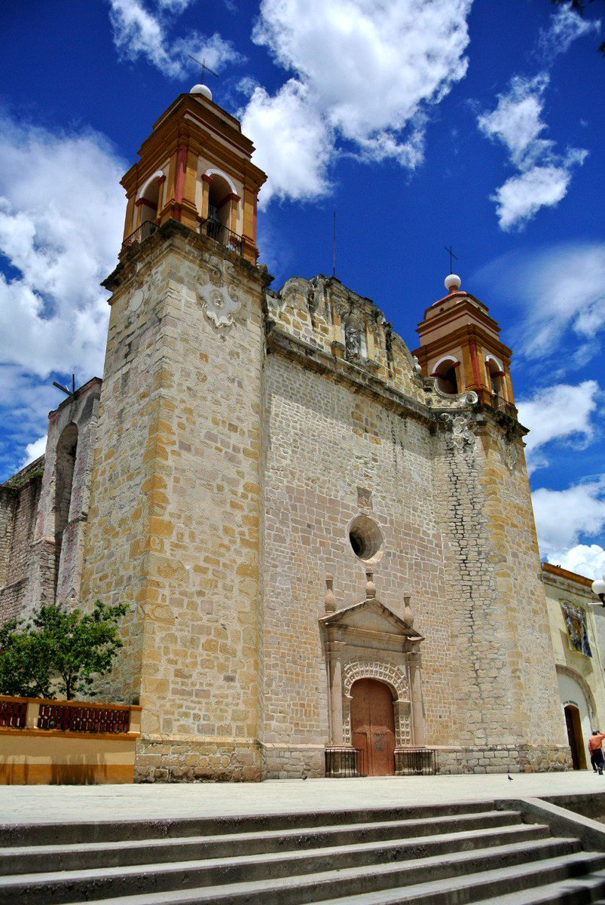
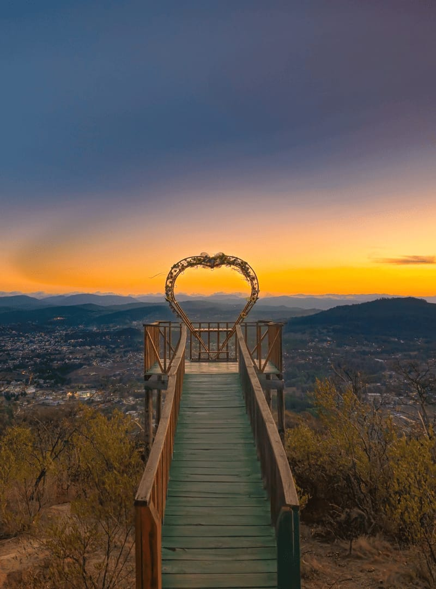

La parroquia de nuestra señora de la asunsion es uno de los edificios historicos mas importantes de la mixteca y destaca por su arquitectura.


ARCO DEL MIRADOR
Este mirador se encuentra en el cerro de la cantera y fue construido como parte de un proyecto ecoturistico para admirar la ciudad y sus paisajes montañosos.
PRESA EL BOQUERON
Es uno de los lugares mas visitados de la region , esta rodeada de montañas y bosques, ideal para caminar , tomar fotografias pescar y disfrutar de la naturaleza.